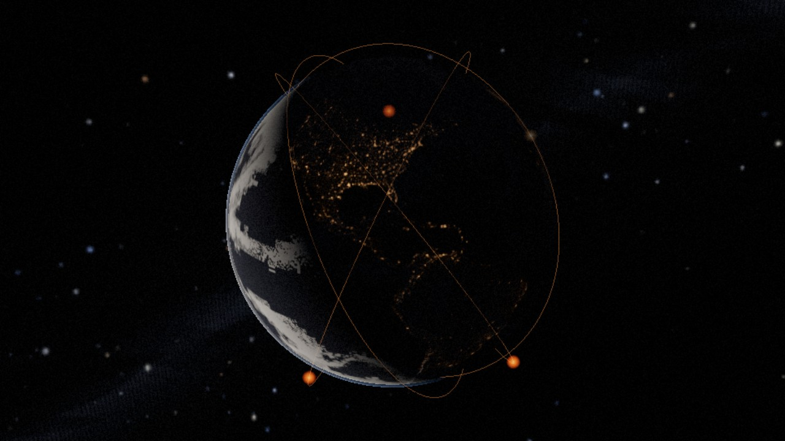
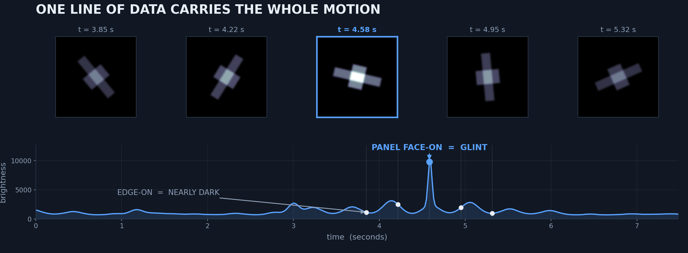
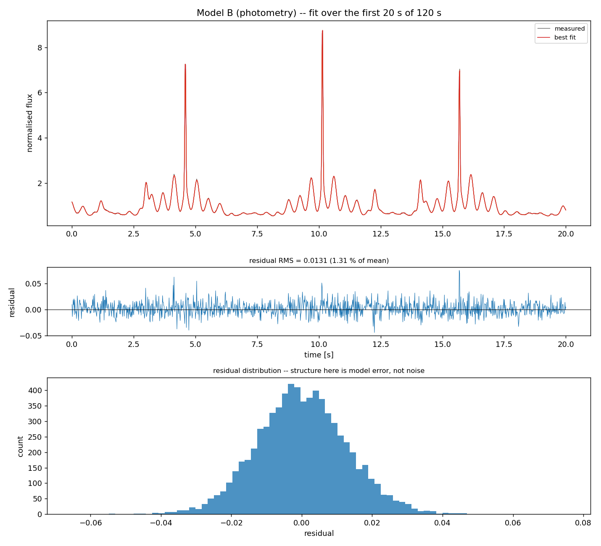
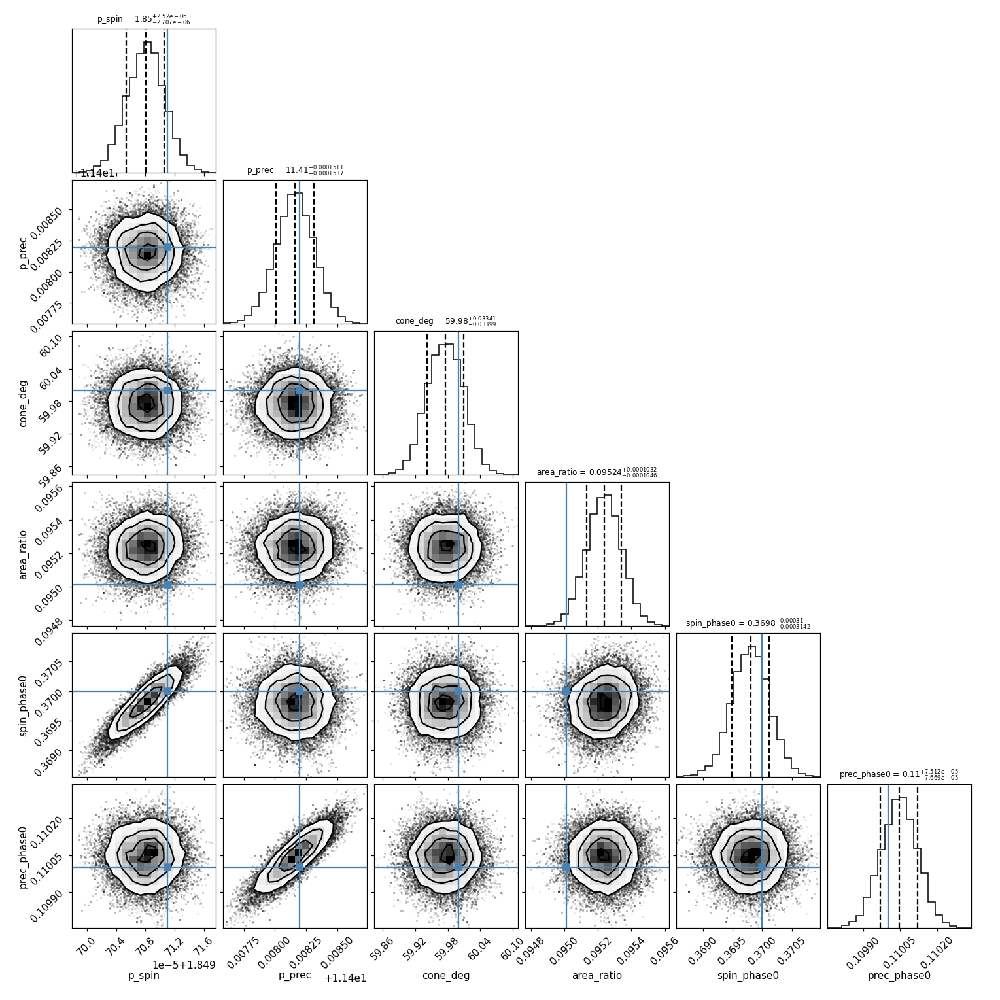
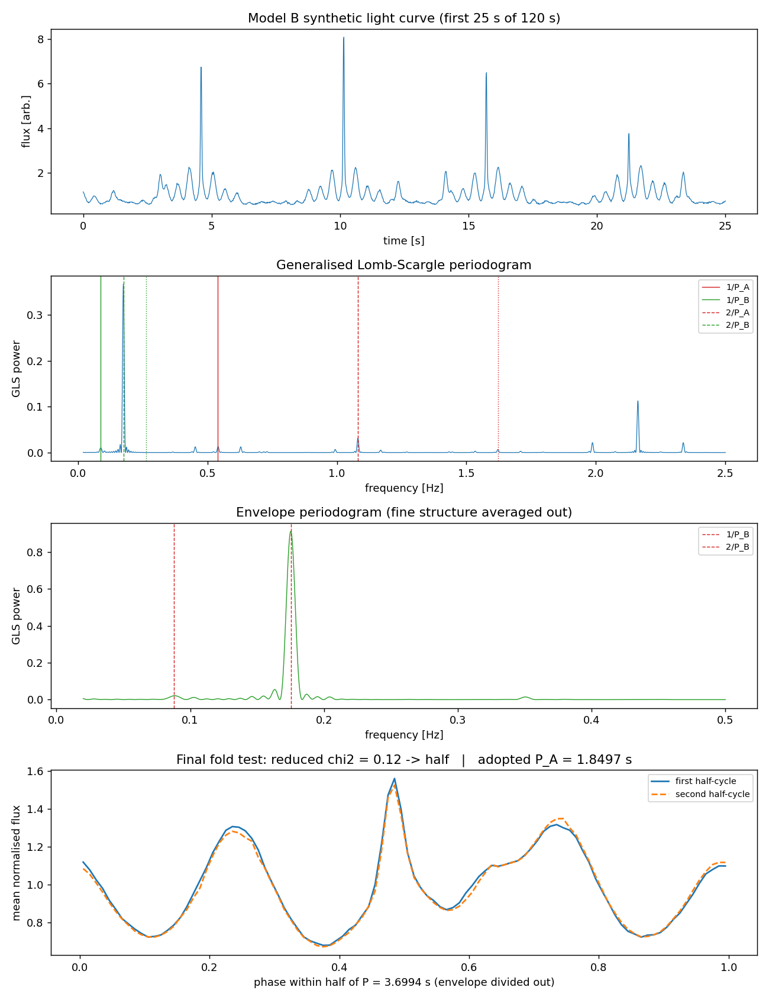
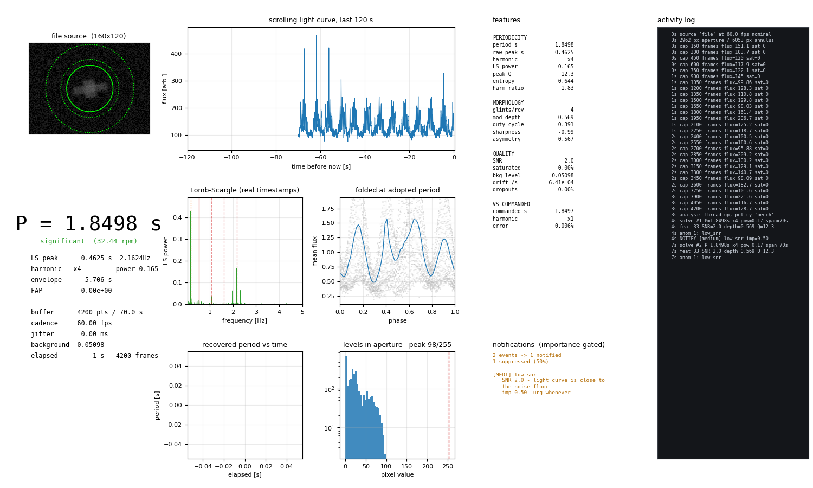
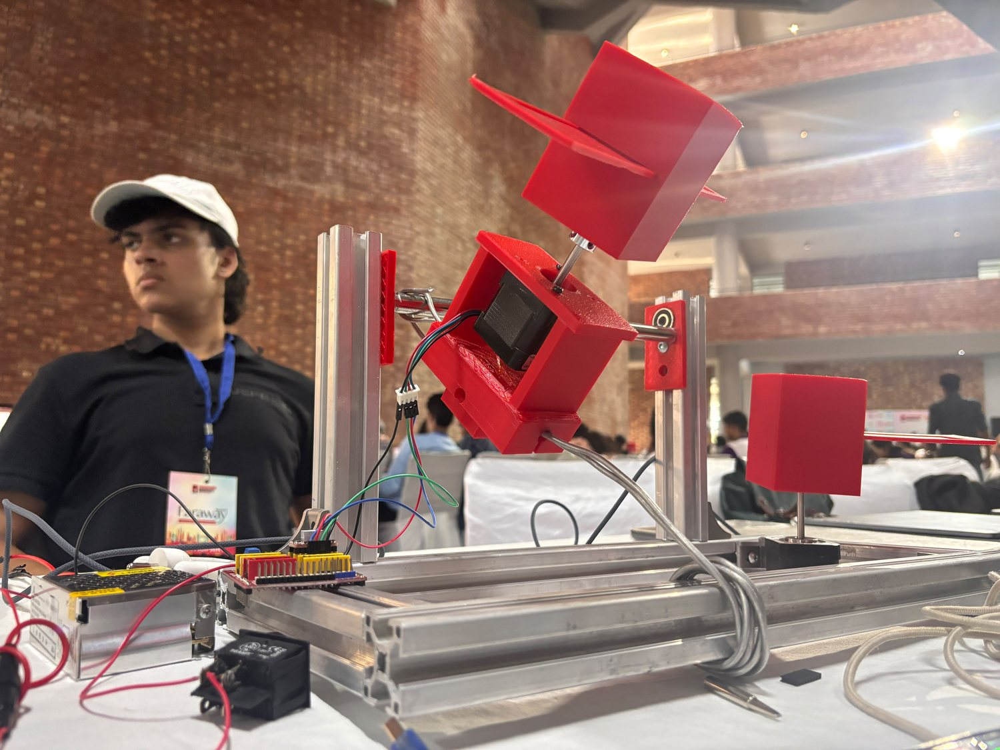
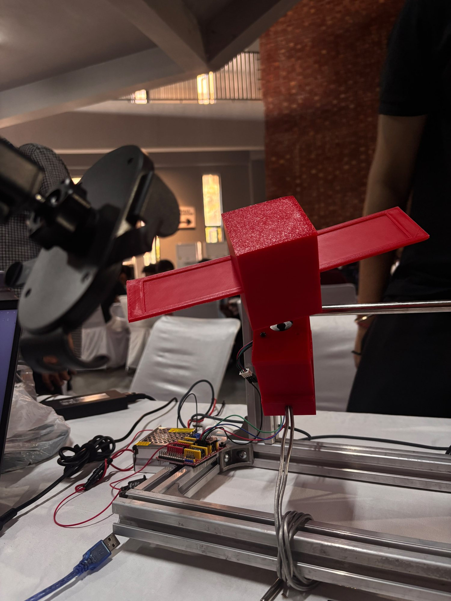
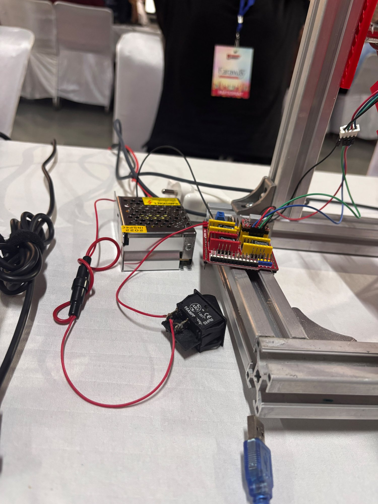
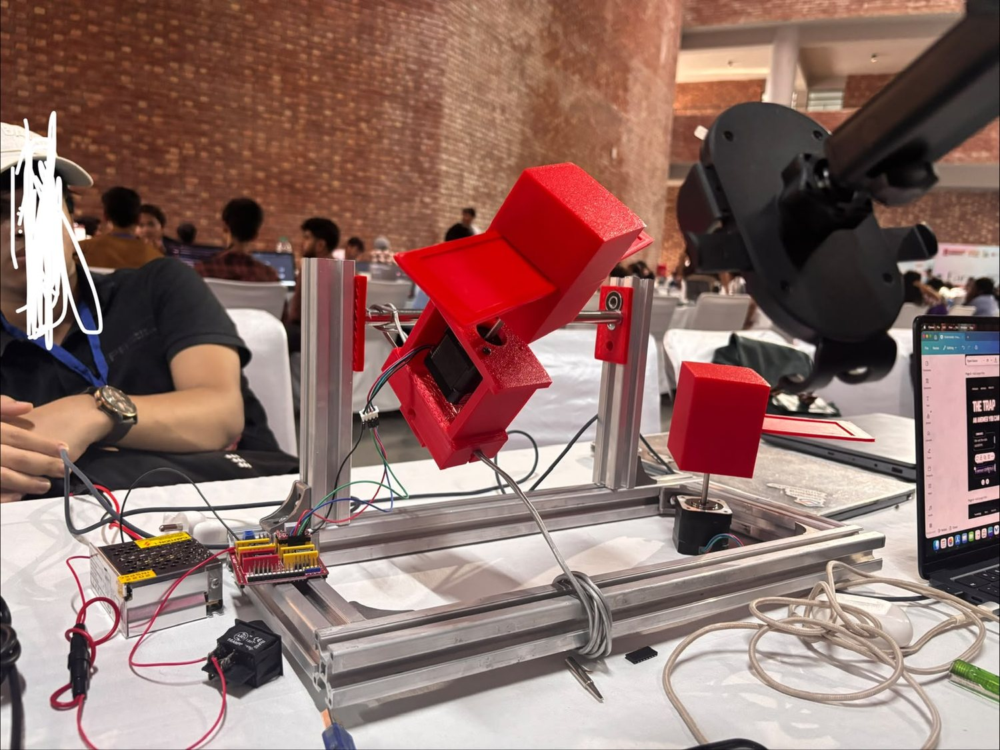

SYSTEM HANDBOOK · SUSTAIN-A-THON 2.0 2026 · SPACE TECHNOLOGY & SUSTAINABILITY
SPINDEX
A robotic servicer closing on a dead satellite has to match the target's tumble before it can touch it, and nobody knows what that tumble is. SPINDEX recovers it from reflected sunlight alone — rotation period, precession, cone angle and coarse geometry — continuously, with uncertainties on every number, using nothing but a camera and a light source.

The problem
A dead satellite is tumbling, and a tug has to match that tumble before it can grapple it. The tumble is unknown, it changes over time, and getting it wrong is how a removal mission becomes a debris-creation event.
Robotic servicers are no longer theoretical. Astroscale's ADRAS-J flew to a spent Japanese upper stage in 2024. Northrop Grumman's Mission Extension Vehicles have docked with live commercial satellites and taken over their station-keeping. ClearSpace-1 is being built to capture and deorbit a rocket adapter.
Momentum transfer
Grapple a body whose rotation you have not matched and its angular momentum becomes yours. Exceed what your wheels and thrusters can dump and you have two tumbling spacecraft instead of one.
Fragmentation
A mistimed contact on a fragile, decades-old structure breaks it apart and creates thousands of new debris objects — the exact opposite of the mission's purpose.
Propellant exhaustion
Matching an unexpected tumble costs fuel that was budgeted for the rest of the mission.
And spin states are not static. They evolve through eddy-current damping against Earth's magnetic field, internal energy dissipation, solar radiation pressure and gravity-gradient torque. A characterisation from three years ago is stale by the time the tug arrives.
The idea: one scalar carries the whole motion
A derelict emits no light of its own. It is metal and composite reflecting sunlight, exactly as the Moon does — and because it is not spherical, the fraction of light it sends toward an observer depends on its instantaneous orientation.
A flat solar panel turning face-on produces a sharp specular glint; the same panel edge-on returns almost nothing. As the body rotates, that fraction varies. Brightness recorded against time is a light curve, and its rhythm, harmonic content and profile shape encode the rotation rate, the orientation of the spin axis, and coarse information about the reflecting geometry. SPINDEX inverts that.

Point this at a real derelict and it produces a number nobody can check, because the true rotation of an uncooperative dead satellite is precisely the thing nobody knows. So SPINDEX is validated against a target whose motion is commanded: the rotation rate is set in firmware, the geometry is set by design, and the inversion is scored against a value that was known before the measurement began.
The 3D bench
The measurement has its own page, and it runs against real objects. Five catalogued satellites are propagated from their published orbital elements with SGP4 against your clock — where they are now, which of them are in sunlight, and what the terminator is doing underneath them. Fly to any of them and the inversion runs on it.
Real orbits, real clock
Positions come from CelesTrak elements propagated with SGP4 against the wall clock; the sun is on its real vector; eclipse is a geometric test against Earth's shadow. Altitude, ground speed, sub-satellite point and element age are read off that, not typed in.
Phase angle is measured, not set
There is no phase-angle slider any more. It is the angle between the sun and the camera as measured at the target, recomputed every frame — fly somewhere else and the illumination geometry genuinely changes, so the light curve does too.
Facets from the spacecraft itself
Each mesh is reduced to a facet set by binning its triangles on normal direction and material. Landsat 7's 40,439 triangles become 738 facets, so the curve belongs to the object you are looking at.
All five are real catalogued objects. Four of them are derelict or spent; the fifth is
there as the counter-example. The symmetric SSL-1300 bus was expected to be
degenerate at P/2 and is not — its dishes and offset hardware
break the 180° symmetry just enough for the fold walk to resolve the full period. Real
hardware is never exactly symmetric, which is why the repository keeps an idealised
box-wing target that is.
| Object | NORAD | Why it is there | Mesh |
|---|---|---|---|
| Landsat 7 decommissioned 2024 · 1,973 kg |
25682 | A real derelict in a crowded sun-synchronous shell; symmetry thoroughly broken, period resolves | the actual spacecraft |
| Envisat failed 2012 · 8,211 kg |
27386 | The object every debris-removal study is written around; its tumble has been measured from the ground and it changed between campaigns | stand-in |
| Intelsat 901 GEO · MEV-1 docked 2020 |
26824 | An SSL-1300 bus — the first satellite ever docked with by a servicer in orbit | the actual bus |
| SL-16 R/B spent Zenit-2 stage · 8,900 kg |
23088 | No array to glint off, so the lowest modulation depth here and where the false-alarm test earns its place | stand-in |
| Hubble operational · serviced five times |
20580 | The counter-example: a cooperative target whose attitude is known to arcseconds | stand-in |
Elements are a dated CelesTrak snapshot, embedded so the page works from any static host; SGP4 propagates it to the present and the page reports the element age rather than implying a precision it does not have. A spin state is not published for any of these objects — that is the point — so the page drives each one with a commanded tumble you set, and scores the inversion against it.
Architecture: nine stages, two paths
The recorded path establishes correctness against a known truth; the live path is what a servicer would actually consume. They share every stage from photometry onward, which is deliberate — a live feed running different mathematics from the validated one proves nothing.
ffmpeg -vsync 0 fused with a constant-frame-rate auditframes.pyemcee, medians and 16th/84th percentilesinversion.pyProduction topology
Deployed against a real target, the same chain splits across three boundaries. Nothing in the inversion needs to know which side of them it is running on.
| Tier | Runs | Rate | Why there |
|---|---|---|---|
| Sensor edge | Frame grab, aperture photometry, per-sample timestamping | 30–60 Hz | Reduces a video stream to one float per frame at the source; everything downstream moves kilobytes, not megabytes |
| Solver | Lomb-Scargle, fold walk, feature extraction, least squares | 1 Hz | A solution per second over the last 60–120 s. Bounded memory and compute, independent of run length |
| Gate & archive | Anomaly detection, importance scoring, checksummed session export | event-driven | Decides what reaches a human, and records why for every decision — fired or suppressed |
Bench instrument ↔ orbital case
| On orbit | On the bench |
|---|---|
| Sunlight | 10 W COB LED, 12 V DC direct-drive, ~5000 K |
| Derelict satellite | Printed box-wing target, mylar bus, acrylic-faced panels |
| Non-principal-axis tumble | Axis A spin × Axis B cradle rock, two incommensurate rates |
| Servicer camera | iPhone or webcam at 60 fps, all automation defeated |
| Solar phase angle | 30° between lamp, target and lens |
| Deep-space background | Light-sealed enclosure, stray light below 2 % of peak |
| Unknown true spin state | Commanded step rate + an independent slot-sensor channel |
The forward model
The target is unresolved: at operational range it is a point source, so only facet normals and areas matter. Facet positions, and therefore self-shadowing, are deliberately not modelled. This is a parameterised box-wing, not a shape solver, and saying which one it is matters — a shape solver would claim far more than the data can support.
Kinematics
R(t) = Rx(ε(t)) · M₀ · Rz(φ(t)) M₀ = Rx(−90°)
φ(t) = 2π t / P_A + φ₀ spin phase
ε(t) = cone · triangle(t / P_B + ψ₀) cradle rock, triangular not sinusoidalThe rock is a triangle wave because the firmware reverses Axis B on a position limit; the harmonic content of a triangle differs from a sinusoid and it shows up in the periodogram, so modelling it as a sinusoid would be a quiet error.
Reflection
μᵢ = n̂ · ŝ cosine of incidence (ŝ: target → lamp)
μₑ = n̂ · ô cosine of emission (ô: target → camera)
ĥ = (ŝ + ô) / |ŝ + ô|
F(t) = scale · Σ [ (A ρ_d / π) μᵢ μₑ + A ρ_s (n̂·ĥ)^k μᵢ ] · [μᵢ > 0 ∧ μₑ > 0] + offset| Surface | ρd | ρs | k | Physical stand-in |
|---|---|---|---|---|
| Bus | 0.35 | 0.25 | 8 | Deliberately creased aluminised mylar — broad and multi-lobed, like real multilayer insulation rather than one mirror facet |
| Panel front | 0.06 | 2.6 | 180 | Blue transparent acrylic facing: flat, strongly directional — this is what makes the glints |
| Panel back | 0.22 | 0.0 | 1 | Bare printed PLA, a near-uniform diffuser |
| Dish (Model B) | 0.30 | 0.9 | 30 | A broad tilted cap whose normal is related to the panel's by no symmetry of the bus |
The bus cross-section must not be square. A square bus is
90°-symmetric about the spin axis, which puts dominant periodogram power at
4/P_A and turns a two-way harmonic ambiguity into a four-way one — an
artefact of the model, not of the physics. The bus is therefore 60 × 85 × 110 mm, with
the two cross-sectional dimensions deliberately unequal.
Inversion & algorithms
Why Lomb-Scargle and not an FFT
A locked 60 fps recording is uniform by construction, so frame index is the clock. A
webcam is not: it drops frames and USB scheduling jitters arrival times. Every live
sample is stamped with time.perf_counter() at grab time and the periodogram
is fed real timestamps. An FFT cannot accept them. The implementation is the
floating-mean generalised Lomb-Scargle of Zechmeister & Kürster (2009), written
directly in NumPy and checkable against astropy with a flag, so the
equivalence is demonstrated rather than asserted.
The interesting part: P versus P/2
A symmetric satellite glints twice per revolution, so the strongest peak sits at
2/P, not 1/P. Report that peak and your period is half the
truth. The standard fix — fold at P and 2P, see which is
self-consistent — is not sufficient. Three things had to be added:
One test is not enough
With realistic bus proportions the dominant peak lands at 4/P, not
2/P. The test has to climb repeatedly until doubling stops paying.
The envelope contaminates it
Because the spin axis is also rocking, consecutive rotations differ in height. Compared bin by bin they always look different, so a naive test doubles the period forever. Each round divides out a boxcar one fold-window wide first.
The null must be empirical
Against photon errors alone every pair of half-cycles looks significantly different: samples in one phase bin come from many rotations at many rock angles and scatter for a physical reason. The test uses the empirical standard error, floored at the photon error.
You can watch the walk run on the 3D bench — the trail shows each doubling, its reduced χ², and whether the halves agreed.
| Parameter | Symbol | Constrained by | Recoverable |
|---|---|---|---|
| Spin period | p_spin | Fine structure of the curve | Exactly |
| Precession period | p_prec | Envelope of the glint heights | Exactly |
| Cone angle | cone_deg | Depth of the envelope modulation | To ~0.04 % |
| Panel : bus area | panel_area | Glint-to-baseline amplitude ratio | Systematics-limited |
| Spin phase | spin_phase0 | Absolute glint timing | Exactly |
| Precession phase | prec_phase0 | Envelope timing | Exactly |
Results & validation
Commanded: spin period 1.84971 s, precession 11.40820 s,
cone angle 60°. 120 s at 60 fps, 160 × 120 px, gamma 2.2, through H.264
in a QuickTime container. Every number below was fitted to a light curve that went
through rendering, compression, ffmpeg extraction and aperture photometry.
The forward model never saw any of that.
| Quantity | Model A (symmetric) | Model B (asymmetric) |
|---|---|---|
| Spin period PA | 1.84971 ± 0.00000 s (−0.000 %) | 1.84971 ± 0.00000 s (−0.000 %) |
| Precession PB | 11.40822 ± 0.00017 s (+0.000 %) | 11.40816 ± 0.00015 s (−0.000 %) |
| Cone angle | 60.019 ± 0.056° (+0.031 %) | 59.976 ± 0.034° (−0.041 %) |
| Panel : bus area ratio | 0.19105 ± 0.00024 (+0.539 %) | 0.09524 ± 0.00010 (+0.237 %) |
| Photometry fidelity (Pearson r) | 0.999559 | 0.999702 |
| χ²red (least squares) | 3.287 | 1.547 |
| Truth inside 68 % interval | 4 / 6 | 4 / 6 |
| Harmonic resolved from photometry alone | No — genuinely degenerate | Yes |
4 of 6 inside the 68 % interval is the expectation for a well-calibrated posterior: the intervals are neither optimistic nor padded.



Things found by testing that would not have been found by reading
A wrong photometry gain made χ² meaningless — and the error rescaling hid it
The gain converting intensity to photons was a hardcoded guess, wrong by 113×. Recovered parameters were unaffected, but the error bars were nonsense and χ²red came out at 174.9. Because the fitter rescales errors by √χ²red, the posteriors still looked plausible and the coverage still looked right. The renderer now writes the true photon scale: χ²red 174.9 → 1.55. Look at the raw χ²red before trusting an interval.
Exposure scaling was silently destroying the photometry
The target initially sat at 0.2 % of full well, so the measurement was mostly 8-bit rounding — 15.7 % residual with no other symptom. The renderer now puts the peak pixel at 88 % of full scale, which is "the longest exposure that does not clip the glint peak" performed rather than trusted. Residual fell to 1.2 %.
Stage 3 is shot-noise limited
Raising peak photons tenfold drops the residual from 1.24 % to 0.44 % — a factor of 3.2 against √10 = 3.16. Disabling drift or stray light moves it by under 0.15 points.
The area ratio is systematics-limited, not noise-limited
Its formal interval is ~0.1 % but it sits 0.24–0.54 % high, at 2.2σ and 4.3σ. Quote it with a systematic term, not the formal error bar.
Features & the notification rule
Detection is cheap; notification is expensive. An alerting system that cries wolf is worse than no alerting system, because it manufactures false confidence that someone is watching.
The rule
importance = severity × confidence × max(novelty, persistence) × kind_weight
Novelty and persistence combine as max, not a product. An
event matters if it is either new or entrenched. Multiplying would
suppress both the first occurrence (no streak yet) and the hundredth (no novelty left) —
precisely backwards.
| # | Gate | Effect |
|---|---|---|
| 1 | Mute | Kinds never notified on, whatever they score |
| 2 | Always-notify severity | Critical conditions bypass cooldown and quiet hours |
| 3 | Severity floor | Below this severity, never notify regardless of score |
| 4 | Importance threshold | The single most consequential dial |
| 5 | Cooldown | Seconds before the same kind may notify again |
| 6 | Quiet hours | Honoured except at or above an urgency override |
| 7 | Rate limit | Hard ceiling per window, whatever the scores say |
Session archives carry SHA-256 checksums, schema version, provenance and the policy that produced their decisions. Import verifies all of it and raises events for tampering, truncation, non-monotonic timestamps and schema drift — gated through the same engine as live events. One bar, one audit trail.

The instrument

Axis A rotates the target continuously. Axis B rocks the entire cradle through ±60°, sweeping the spin axis through the observer's frame. Two incommensurate frequencies — the signature of genuine non-principal-axis tumbling, which is what real derelicts do, rather than a trivial single-axis spin any FFT solves in one line.
| Quantity | Value | Derivation |
|---|---|---|
| Microsteps per motor rev | 3,200 | 200 × 16 |
| Microsteps per Axis B rev | 9,600 | 3,200 × 3 (60 T driven by 20 T) |
| Axis B resolution | 0.0375 °/µstep | 360° ÷ 9,600 |
| Axis B sweep, ±60° | ±1,600 µsteps | 120° ÷ 0.0375°, measured from centre |
| Axis A rate for PA = 1.85 s | 1,730 µsteps/s | 3,200 ÷ 1.85 |
| Axis B rate for PB = 11.4 s | 561 µsteps/s | 4 × 1,600 ÷ 11.4 |
Appendix A.3 lists "±60° → 3,200 microsteps"; that 3,200 is total peak-to-peak travel, so the amplitude from centre is 1,600. Taking it as ±3,200 rocks the cradle ±120°, double the travel the flexing service loop was sized for. And the same table's "842 steps/s" disagrees with its own stated derivation, which gives 561 — the value the firmware uses.
Four design decisions that are measurement decisions
TMC2209, not A4988
An A4988 at coarse microstepping produces measurable cogging: a periodic variation in rotation rate locked to the step frequency. A periodic rate ripple is indistinguishable from a real periodic signal — it appears in the periodogram as a spurious peak and you spend days chasing a frequency generated by your own motor.
A rocking cradle, not a full gimbal
A continuously rotating second axis needs a slip ring, which brings friction, contact noise on the sensor line, and another failure mode. Because Axis B never exceeds ±60°, the cables pass through a service loop that flexes rather than wraps.
DC-driven COB, never a mains LED flood
Cheap LED floods modulate at 100 Hz; recording at 60 fps produces a beat that appears as a strong periodic signal which is entirely an artefact of the lighting. It looks exactly like a real detection. A 10 W COB on the regulated DC rail removes it for about ₹250.
30° phase angle, not 0°
Putting the lamp beside the camera maximises returned flux and is wrong twice over: the camera physically shadows the target, and at near-zero phase opposition brightening compresses the specular-to-diffuse contrast being measured.
The slot sensor — the ground-truth channel
The cheapest item in the build and one of the most important. A tab on the target hub
breaks an IR beam once per revolution; the controller polls D9 every loop
and prints micros() on each rising edge. It measures the true rotation period
through a completely independent physical channel — no camera, no lens, no codec,
no photometry. Edge resolution of 20–100 µs against a 1.85 s period is a fractional error
below 0.006 %, so the reference is not the limiting term in the
comparison — exactly the property a reference must have.



Running & deploying
Everything below runs without hardware.
pip install -r requirements.txt
# full chain: synthetic -> video -> photometry -> period, scored against truth
python pipeline/run_pipeline.py --model B
# stages 7-9: least squares + MCMC posteriors against the measured curve
python pipeline/validate.py --model B --from-photometry
# live monitor
python pipeline/live.py --list-devices
python pipeline/live.py --source 0 --window 120
# features + anomalies + importance-gated notifications + archive
python pipeline/analyse.py --csv data/serial/run01.csv --expect 1.8 \
--export data/sessions/run01
# tests
python pipeline/test_notify.py # 44 checks
python pipeline/test_recovery.py # 80-case robustness sweepDeploying this handbook
A static site: HTML, CSS, ES modules, images and four glTF models. No build step, no server-side component.
# serve locally (a server, not file:// — the page uses ES modules)
python -m http.server 8000 --directory handbook
# GitHub Pages: Settings -> Pages -> deploy from branch, /(root)
# Netlify / Vercel / Cloudflare Pages: publish directory `handbook`Minimum recording length 120 s — 60 s cases fail at 10 % noise. Stray light below 2 % of target peak. Exposure set so the glint peak lands near 88 % of full scale: clipping destroys the amplitude information the area ratio depends on, and under-exposure turns the measurement into 8-bit rounding.
Limits & build status
An instrument whose limits are declared is more credible than one whose limits are discovered by the examiner.
| Subsystem | Status |
|---|---|
| Analysis pipeline, stages 1–9 | Complete and validated against known truth |
| Live monitor and notification subsystem | Complete; 44/44 tests pass |
| Frame, cradle, transmission | Assembled |
| Motors, drivers, shield, power | Wired and running |
| Firmware | Written, compiles, flashes, verified over serial |
| Drivers fitted | A4988 in place of the specified TMC2209 — expect cogging until swapped |
| Controller | Failed during bring-up; replacement on order |
| Slot sensor | Not yet fitted |
| Second axis | Available but parked — currently single-axis |
| Target surfacing | Bare PLA; mylar bus wrap and acrylic facing still to do |
Method limits that no amount of hardware fixes
- A symmetric target is genuinely degenerate. Photometry alone cannot
distinguish
PfromP/2for a body invariant under 180° about its spin axis. SPINDEX reports the degeneracy rather than guessing. - Panel area is only ever relative. It is degenerate with lamp brightness and distance; only the panel-to-bus ratio is constrained.
- This is a parameterised box-wing, not a shape solver. Coarse geometry is recoverable; a mesh is not.
- A phase angle near 0° degrades the measurement by compressing the very contrast the method reads.
Every result in this handbook is validated against synthetic data and rendered video with known ground truth. That is why the science was finished while the hardware was still in pieces, and why the hardware's current state does not put any reported number in doubt.
References & credits
| Reference | Used for |
|---|---|
| Zechmeister & Kürster (2009), A&A 496, 577 | Generalised Lomb-Scargle, floating-mean normalisation |
| Stellingwerf (1978), ApJ 224, 953 | Phase dispersion minimisation, as a shape-free cross-check |
| Foreman-Mackey et al. (2013), PASP 125, 306 | emcee, stage 8 posteriors |
| Blinn (1977) / Phong (1975) | Specular lobe in the forward model |
| ESA Space Environment Report | Debris population statistics |
| Astroscale ADRAS-J (2024) | Rendezvous with a spent upper stage |
| Northrop Grumman MEV-1 / MEV-2 | Docking with live satellites in GEO |
| NASA 3D Resources | Spacecraft geometry on the 3D bench — free and without copyright |
The name
SPINDEX — Spin Determination by INDEX of Reflected Light. The "index" is the light curve itself: a one-dimensional trace of brightness against time that indexes the full three-dimensional attitude history of a body nobody can reach, touch, or ask.
SPINDEX · SDC-001 Rev B · Team ZEIT v1.0 · Team ID S080
· Lead: Sarthak Tyagi
Spacecraft geometry from NASA 3D Resources; NASA does not endorse this project.
Rendering with three.js r169.
github.com/Sarthakk1407/SPINDEX
ORBITAL BENCH · SUSTAIN-A-THON 2.0 2026 · TEAM ZEIT v1.0 · S080
SPINDEX Orbital Bench
A real derelict spacecraft, tumbling under the commanded kinematics, lit by one source and watched by one camera. The geometry is NASA's. The light curve under it is not an animation of a measurement — it is the measurement, summed over facets taken from this spacecraft's own triangles.
The whole inversion runs on this page. Underneath the viewport, the generalised Lomb-Scargle periodogram, the sub-harmonic fold walk, the envelope search, thirty-three features, the anomaly detectors and the seven-gate importance rule all execute in the browser, once a second, on the last sixty seconds of samples. The readout, the strip and the log below are showing that computation.
Signal monitor — the last 30 s
—Lomb-Scargle periodogram
spin band above 0.5 HzPhase fold, two halves
overlaid ⇒ doubling buys nothingRecovered period vs time
grey = rejected by the FAP testThe chain, executing
lit blocks are the ones that ran on the last solveMeasured in this simulation
computed on this page, frame by frameEvery figure above is computed from the samples drawn in the monitor. The false-alarm probability governs whether the solution is claimed at all: when it fails, the readout greys itself out rather than reporting a confident wrong number.
Sub-harmonic fold walk
χ²red ≥ 2 ⇒ halves differ ⇒ doubleImportance gate
0 submitted · 0 notifiedSelected part
click in the viewport or on a labelNothing selected. Click a labelled part on the spacecraft, or click the mesh itself to see which material the glint came off.
Event log
every decision, fired or suppressedWhat this page is
A working model of the SPINDEX measurement against a real object. Three real spacecraft are available, each a case the method has to handle and a real object somebody has had to think about, plus the repository's own idealised box-wing. The NASA geometry is unmodified apart from centring, scale and body-axis orientation.
Nothing here is a video of a system. The orientation being rendered is the orientation being measured, the flux is summed over facets extracted from the spacecraft you can see, and the period in the readout is recovered by the same periodogram and the same fold walk the Python pipeline runs.
How a real mesh becomes a facet set
The forward model sums over facets because the target is unresolved: at operational range it is a point source, and only normals, areas and reflectances matter. A NASA model is the same thing at higher resolution — tens of thousands of triangles, each with a normal, an area and a material. Summing all of them every frame would be wasteful, since thousands of triangles share a normal to within a degree.
All three real spacecraft resolve their full period. That is itself a
result. The SSL-1300, two opposed arrays over a box bus, is the configuration that
should be degenerate at P/2 — and it is not, because its dishes
and offset antenna hardware break the 180° symmetry just enough for the fold walk to
climb. The degeneracy needs a target built to be exactly symmetric, which is what the
Model A box-wing is for: select it and the readout says P/2 · degenerate,
the same answer the Python pipeline gives for the same target.
So the mesh is reduced the way the physics already implies. Triangles are binned by the direction they face — 32 bins in azimuth by 16 in elevation — and by what they are made of; the area in each bin is added up and the area-weighted mean normal kept. A 40,000-triangle Landsat collapses to a few hundred facets that reproduce its directional scattering, and the reduction happens once, when you select the target.
| Material class | ρd | ρs | shininess | Identified by |
|---|---|---|---|---|
| Solar array | 0.06 | 2.6 | 180 | Material name, or a dark strongly blue base colour |
| MLI / foil | 0.35 | 0.25 | 8 | Material name, or a bright warm saturated colour |
| Bare metal | 0.22 | 0.9 | 40 | Material name, or metalness above 0.6 |
| Structure | 0.30 | 0.20 | 12 | Everything else |
The Model A box-wing is the exception: its facets come straight from
forward_model.py rather than from its mesh, because it exists precisely
to be exactly symmetric and a mesh reduction would introduce the tiny asymmetries that
destroy the degeneracy it is there to demonstrate.
Said plainly: the reflectance values are the repository's own, measured for its bench target, and the assignment of a NASA material to one of these four classes is a heuristic over the material's name and colour. The kinematics, the periodogram and the fold walk are exact; the absolute photometry of a specific real spacecraft is not claimed, and the validated numbers in the handbook come from the box-wing targets, not from these models.
Reading the scene
- The orange dashed line is the spin axis, body
+z. The two orange arcs are the limits it rocks between — a planar fan, not a cone, because the cradle rocks about a single axis. - The pale beam is sunlight arriving; the blue beam is the return leg to the observer, and its brightness tracks the measured flux. That return is the entire signal: one number per frame.
- The flare on the array is driven by the specular fraction of the computed flux, so the flash on screen and the spike in the curve are the same event, not two effects timed to match.
- The servicer closes only once the solution has been stable long enough to reach LOCK, and backs off the moment a period change clears the importance bar. That sequence is the reason the feed exists.
The three targets
| Target | Why it is here | Harmonic |
|---|
What the simulation actually computes
| Block | What runs |
|---|---|
| Kinematics | R(t) = Rx(ε(t)) · M₀ · Rz(φ(t)) with a triangular rock, matching the firmware's position-limit reversal |
| Reflection | Lambertian term plus a Blinn-Phong lobe per facet, gated on the facet being simultaneously lit and visible |
| Sampling | 60 Hz with Gaussian timing jitter and optional dropouts; every sample carries its own timestamp |
| Noise | Gaussian, as a fraction of the mean flux, plus optional clipping at the detector ceiling |
| Period search | Floating-mean generalised Lomb-Scargle on a 60 s window, time-sliced across frames so a solve never blocks the render |
| Harmonic | Sub-harmonic fold walk, each round on a curve flattened over its own fold window |
| Envelope | Boxcar over one spin period, then a narrow-band periodogram below 0.5 Hz, with its own walk and a baseline guard |
| Gate | severity × confidence × max(novelty, persistence) × kind weight, through seven ordered gates |
Credits
Spacecraft geometry from the NASA 3D Resources collection, which NASA publishes free and without copyright. Landsat 7, the Space Systems Loral SSL-1300 bus, the Agena target vehicle and the Shuttle Remote Manipulator System are used unmodified apart from centring, scaling and re-orientation. NASA does not endorse this project. Rendering with three.js r169.